v0.8 pre-releaseA Lock of the Lock Family · open source · Apache 2.0
Your agent asks about the file. It never reads it.
Any AI agent can ask yes/no questions about a file in S3, on SFTP or on disk. Signed, sandboxed plugins answer, and the agent only ever gets 1s and 0s.
brew trust davidgodefroid/tap
brew install davidgodefroid/tap/lox davidgodefroid/tap/lockfileLinux only (the plugin sandbox needs Landlock and seccomp), with Docker. Then lox add lockfile and lox run. The whole family: brew install davidgodefroid/tap/lockfamily.
Part of the Lock Family: one hub (lox run) approves for every Lock.
lockfile · profile fileslox run · ticket
- Plan · 2 answers
- asked
invoices/2026/10/abc123.pdffile.non-emptyandformat.is-pdf, with their signed questions. Every plan waits for you. - Answers
file.non-empty: 1·format.is-pdf: 0Not empty, not a PDF. No byte, name, size or type of the file.
Approved · y
What the agent gets
One bit per plugin, or no answer. Never the file.
lox run, and all the agent gets back.See it run


lox run.What the agent gets
One plan, two questions about one file. The agent names the key it was given and the plugins it wants. This is the whole answer:
$ lockfile plan --key invoices/2026/10/abc123.pdf \
--plugin file.non-empty --plugin format.is-pdf --run --json
{"handle":"f_8Kq2xR","answers":[
{"plugin":"file.non-empty","version":"1.0.0","official":true,"result":1},
{"plugin":"format.is-pdf","version":"1.0.0","official":true,"result":0}]}The file is not empty and does not start like a PDF.
"result": null with "error": "plugin_error" means the plugin gave no answer: it is not a 0. The exit code depends on the outcome only, never on an answer.
Why lockfile?
Some files must not reach a model: invoices, contracts, medical letters, anything with personal data.
Yet an agent debugging a pipeline often needs one fact about one of them. Did it arrive empty? Is it a broken PDF? Is a page blank?
Read access answers that and leaks everything else. lockfile answers the question and nothing else.
| Property | Agent reads the file | lockfile |
|---|---|---|
| Agent never sees a byte of the file | No | Yes |
| Agent never sees the name, size, type or a listing | No | Yes |
| Agent never holds the storage credentials | No | Yes |
| A human approves every plan, outside the agent | No | Yes |
| Every question is fixed and signed in advance | No | Yes |
| The code that reads the file has no network | No | Yes |
| Answers released on a fixed time quantum | No | Yes |
| Append-only audit of every fetch and outcome | No | Yes |
The agent only ever sees 1s and 0s about a file.
See what you approve
Before anything is fetched, the console draws the plan: the agent’s own request and the plugins’ signed questions. Nothing about the file is on it: no source has been touched yet.
The same screen goes to lockhub as a ticket. Every lockfile plan waits there until you answer it in lox run.
╭─ SAMPLES · file plan · 2 answers ─────
│ requested by uid 1000 (alice) · pid 48211 · exe /usr/local/bin/lockfile
│ agent: check the invoice reported as blank
│
│ key invoices/2026/10/abc123.pdf
│
│ file.non-empty@1.0.0 (official)
│ ? Does the file contain at least one byte? 1 = size > 0 0 = the file is empty
│ format.is-pdf@1.0.0 (official)
│ ? Does the file start like a PDF? 1 = `%PDF-` appears within the first 1024 bytes 0 = no PDF header
│
│ this plan reveals at most 2 answers about the file
╰─ pending: ticket 01J…n denies; a reason you type is never forwarded to the agent. A production profile flags its tickets, and the console’s own widenings (its policy review, a plugin added) need the profile name typed.
Highlights
Only 1s and 0s
Everything the console sends the agent comes from a closed list, checked end to end over the socket. No size, type, hash, name, listing or error text.
Human in the loop
Every plan is a ticket you answer in
lox run, outside the agent. The screen says how many answers the plan reveals.Signed questions
Each plugin answers one question fixed in its signed manifest. No parameters: a parameter would let the agent aim the bit at the content.
Sandboxed plugins
Landlock, seccomp and rlimits: the file as a read-only fd 3, no path, no network, an empty environment, stdout capped at 3 bytes.
cosign everywhere
Plugins, the marketplace index and lockfile’s own releases are checked against keyless cosign signatures. There is no unsigned mode.
Timing padded
A run’s result leaves the console only at the next multiple of
answer_quantum(5 s by default), so a fast or slow plugin tells nothing.S3, SFTP, local
Keys outside the profile’s prefix are refused, objects above
max_object_bytesare not fetched, and a fetched file is deleted on release or expiry.Audit for you only
Key, size, sha256, fetch cause and each plugin’s precise outcome go to an audit log only the console account can read. Never file bytes.
Quick start
Install with Homebrew (the box above), on Linux. Docker must be running.
In your project,
lox add lockfileasks where your files are (S3, SFTP or a local directory), sets up the lock and starts its console.cd your-project lox add lockfileInstall the plugins you want. The console applies them after
:review(lox attach files, wherefilesis the name you gave the lock).lockfile plugin install file.non-empty@1.0.0 lockfile plugin install format.is-pdf@1.0.0 lox attach filesIn a terminal of its own, outside any agent, keep
lox runopen. Every plan shows up there for your decision.lox runStart your agent in the project (
claude,codex,gemini, …) and ask about a file by its exact key.
lox add wires Claude Code. For Codex, Cursor or Gemini CLI, also run lockfile init codex (or cursor, gemini).
Know the limits
The console is the enforcement point. Plugins answer one bit each, but a plugin whose code does not match its question is mitigated by review and signing, not prevented.
A missing answer (plugin_error) and a failed fetch (fetch_failed) each carry one symbol that depends on the file.
The host’s own accounts can read a running plugin’s /proc entries unless the host mounts /proc with hidepid=invisible.